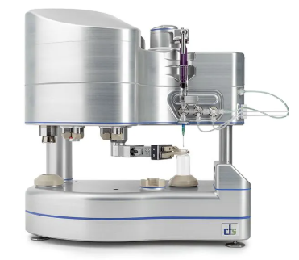

The device isolates medical isotopes used in diagnostic imaging procedures performed on millions of patients annually. Operators interact with the device in shielded hot cell environments, often using manipulator arms and working under time pressure dictated by isotope half-life decay. An error during isolation (wrong sequence, missed verification, contamination event) has direct consequences for patient safety and facility operations.
BWXT Medical was developing a new version of this device and needed human factors engineering support to satisfy FDA requirements under IEC 62366. The device went through several design iterations during the engagement, each introducing changes to the interface, workflow, and physical configuration that required reassessment.

The foundation of the work was a use-related risk analysis: a systematic examination of every interaction between the operator and the device to identify where errors could occur and what their consequences would be. This is the core analytical deliverable in IEC 62366-compliant usability engineering: it establishes which use scenarios carry risk and therefore require design mitigation or validation testing.
I worked from technical documentation, engineering drawings, and procedural descriptions to construct a complete picture of the use environment, user population, and task sequences. For each task step, I identified potential use errors (slips, mistakes, perceptual failures) and traced them through to their downstream effects on safety and device function.
The analysis produced a prioritized set of critical tasks: the specific interactions where design inadequacies could lead to serious harm. These critical tasks became the focus for both design recommendations and the validation testing protocol.
| Technique | Application |
|---|---|
| Use-related risk analysis | Systematic identification of use errors, their causes, and downstream safety consequences for each operator task |
| Task analysis | Decomposition of operator workflows into discrete steps, decision points, and information requirements |
| User requirements definition | Translation of risk findings and task demands into measurable requirements for the device interface and workflow |
| Design review | Evaluation of successive device iterations against user requirements and usability criteria |
| Validation test planning | Design of simulated-use testing protocol targeting critical tasks, with defined performance criteria and pass/fail thresholds |
The risk analysis identified where errors could occur. The next step was defining what the design needed to do about it. I translated the risk findings into a set of user requirements: specific, measurable statements about what the device interface and workflow must provide to support safe and effective use.
These requirements addressed interaction design, feedback mechanisms, labeling, physical layout, and procedural safeguards. Each requirement was traceable to a specific use risk, ensuring that design decisions were grounded in evidence rather than assumption. The requirements served as the criteria against which each design iteration was reviewed and against which validation testing would ultimately be evaluated.
The device went through multiple design iterations during the engagement. With each iteration, I reviewed the updated interface and physical configuration against the established user requirements, assessing whether new design choices adequately addressed the identified risks or introduced new ones.
Recommendations covered areas including control-display mapping, visual feedback for critical state changes, labeling and differentiation of components, and physical access under manipulator-arm operation. Each recommendation was documented with reference to the specific risk it mitigated and the user requirement it fulfilled, providing the engineering team with clear rationale for implementation.
The final phase of the usability engineering process was planning the summative (validation) usability test: the study that would generate the evidence FDA reviewers need to assess whether the device can be used safely and effectively by its intended users.
I designed the test protocol targeting the critical tasks identified in the risk analysis. The protocol defined participant selection criteria, simulated-use scenarios, performance measures, observation methods, and pass/fail thresholds. It was structured to demonstrate that the device design adequately mitigated the use-related risks documented throughout the process.
The engagement produced a complete usability engineering file ready to support the manufacturer's FDA submission: risk analysis, user requirements, design review findings, and a validated test protocol. Design recommendations were incorporated across successive device iterations, each time reducing the number and severity of foreseeable use errors.